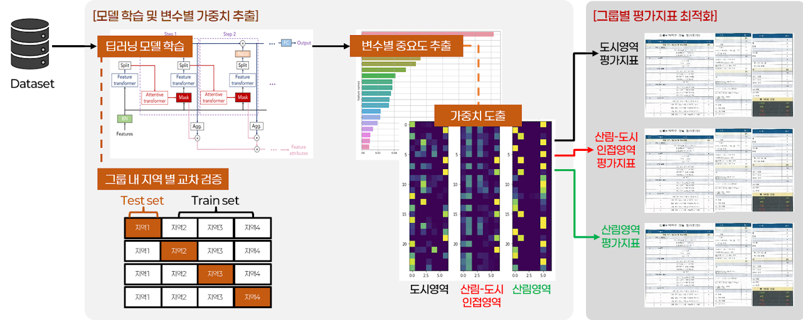
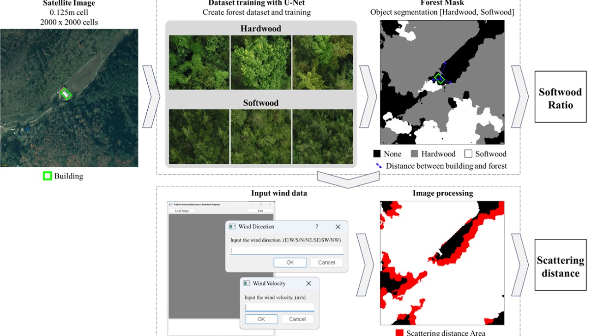
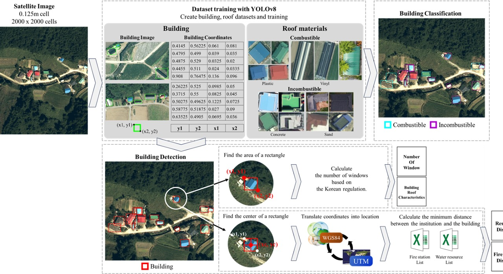
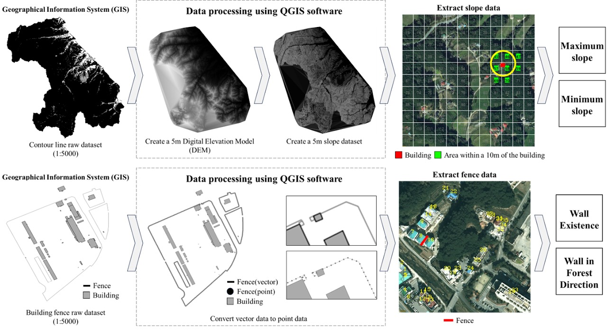
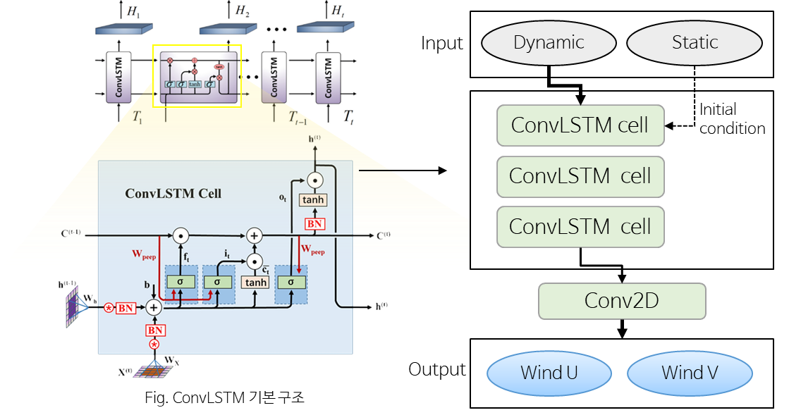
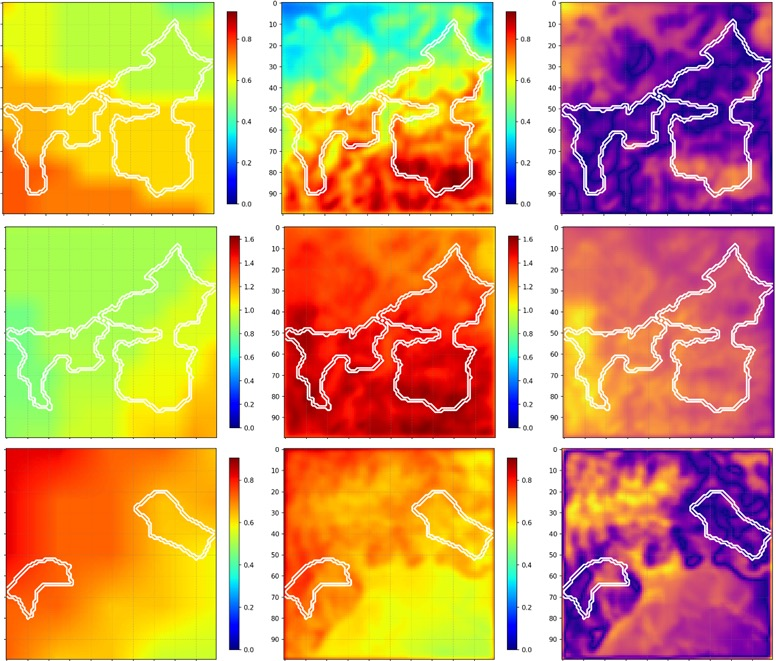
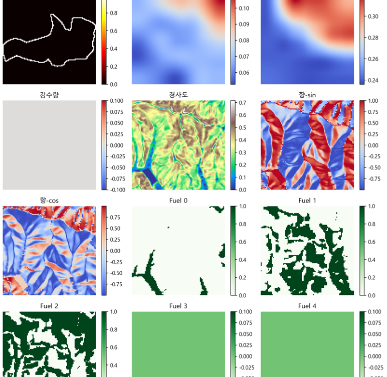
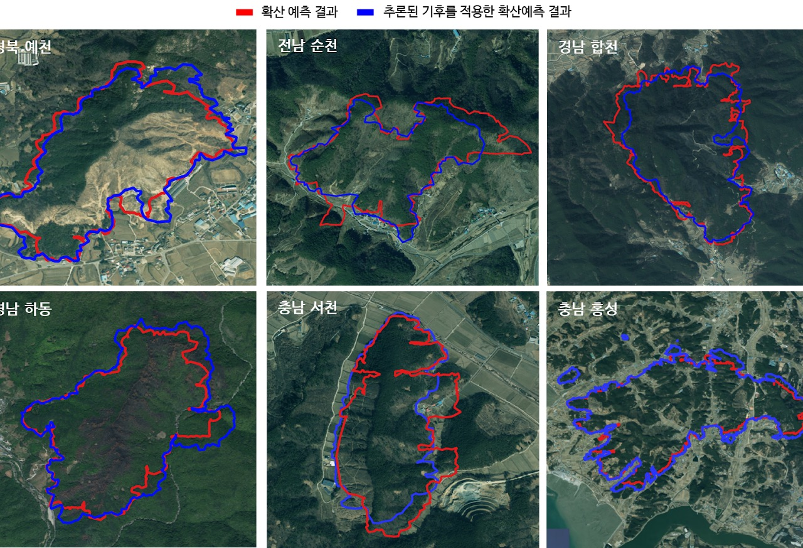

연구 · Wildfire
산불은 기상·지형·연료가 얽힌 복잡한 현상입니다. 우리는 산불 피해지 데이터와 확산 예측 정보를 바탕으로, 시설물이 산불에 얼마나 취약한지 평가하는 지표를 자동화하고, 국소 지역의 바람장을 예측하는 대리 모델(surrogate model)을 만듭니다. 데이터와 최적화로 재난에 대비하는 연구예요.
건물·시설이 산불에 취약한 정도를 정량 지표로 만들고 자동으로 계산합니다.




산불 확산의 핵심 변수인 국소 바람장을 빠르게 예측합니다.


실제 피해지 데이터로 기상 대리 모델을 학습시켜 예측을 빠르게 만듭니다.

